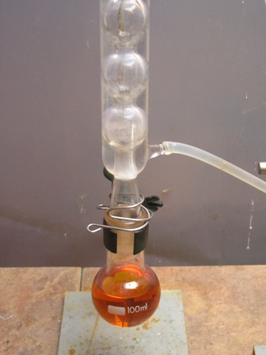
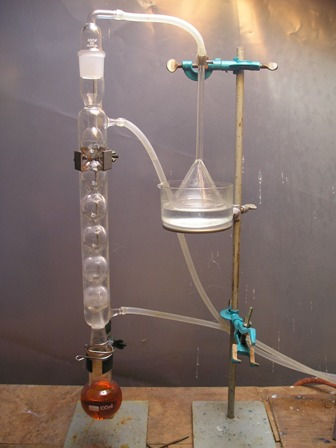
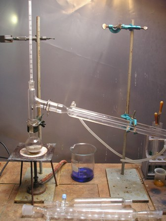
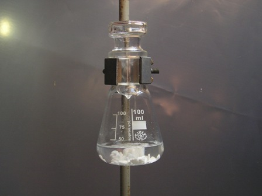

Allora oggi dobbiamo bromurare l'alcol amilico.
Sarà un lavoro piacevole perchè gli alogenuri alchilici mi sono particolarmente simpatici.
Applicherò il terzo metodo di alogenazione che abbiamo visto l'altra volta (alcol + acido alogenidrico), per tre motivi:
1- i primi due metodi sono per lo più industriali e non hanno senso in laboratorio
2- il metodo con i trasportatori di alogeno l'avevo già sperimentato più volte
3- avevo un po' di acido bromidrico da buttare nella mischia (mi diceva in confidenza che era stufo di languire ozioso nella bottiglia...).
Forte della terza motivazione, accontentiamo allora il rude acido bromidrico e andiamo a celebrare questo suo matrimonio con il mite pentanolo.

Materiali occorrenti
-Acido bromidrico 48% (va bene anche a titolo leggermente inferiore)
-Alcol n-amilico (1-pentanolo)
-Acido solforico
-Allhin, Liebig e vetreria opportuna

In pallone da 100 ml introdurre 50 g (34 ml) di acido bromidrico al 48% e 14,5 g (8 ml) di H2SO4 in piccole porzioni, agitando e raffreddando con acqua; si può svolgere una piccola quantità di HBr e la soluzione si colora in arancione.Aggiungere 21 g (26 ml) di 1-pentanolo, seguito da ulteriori 24 g (13 ml) di H2SO4 conc. in piccole porzioni agitando.

Porre a leggero riflusso per 2-3 ore, eventualmente con l'apparato per l'assorbimento acido come si vede in foto; ho notato però che praticamente quasi nulla sfugge dalla bocca del refrigerante.
L'alchilbromuro si separa sopra la miscela acida e può essere separato facilmente.
Mettere in imbuto separatore ed eliminare l'acido residuo. Lavare poi inizialmente con una ventina di ml di HCl conc., che elimina l'alcol residuo, e poi con acqua.
Eliminare l'acidità con una soluzione al 5% di Na2CO3 ed infine ancora con acqua fino a sicura neutralizzazione, separando bene ogni volta.

Predisporre quindi il refrigerante Liebig e distillare fin quasi a secchezza il grezzo preventivamente preparato, raccogliendo tra 127-132° (praticamente passa tutto in questo range).Alla fine seccare il distillato con poco CaCl2 per almeno un'ora.
La resa è stata dopo tutti i passaggi migliore di quella che mi aspettavo, 27 g (22 ml, circa 89%)
Il bromuro di n-amile si presenta come un liquido limpido pesante (d. 1,22, p.e. 130°), di odore etereo pesante ma piacevole.

Ora il nostro alogenuro è pronto per la futura sintesi di un olezzantissimo tiolo!
Quando si parla di tioli il problema "ambiente" si fa arduo, nel senso che è assolutamente improponibile fare queste preparazioni in laboratorio (se lo stesso non è munito di una efficientissima cappa!) perchè l'odore di questi composti col gruppo -SH (l'amilmercaptano è prorio uno di quelli giusti...) è davvero insopportabile ma soprattutto è molto persistente e dove si attacca rimane, vestiti compresi.
Dovrò pertanto trasferire all'esterno tutto il setup per la sintesi e per far questo occorre che la stagione sia bella calda e confortevole.
Se ne riparlerà quindi a tempo debito... per ora conserviamo con cura l'1-bromopentano nella sua bottiglietta scura, in attesa di essere sacrificato a miglior gloria, tanto lui (l'abbiamo visto dalla tabella) non vede l'ora di reagire con qualcuno!